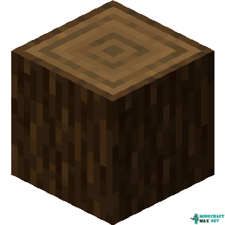

An oak is the most common tree in the game, found in a variety of biomes, available in several variants. It has the smallest initial space requirement for growth, and along with dark oak trees, it has a chance to drop an apple when a leaf block is destroyed. As with birches, an oak tree grown near flowers can generate with a bee nest attached.
Birch
A birch is a tree that appears similar to a common oak in terms of height and leaves, but with light bark and pale wood. It is most commonly found in birch forest biomes. Tall birches are found only in old growth birch forest biomes and cannot be grown with saplings without the use of cheats. As with oaks, a birch tree near flowers can generate with a bee nest attached.
Spruce

A spruce and pine, grows from a spruce sapling and has growth patterns and requirements similar to birch trees, although they appear different. They are mainly found in the taiga biome, but they may also generate in windswept forest, snowy plains, snowy taiga, and old growth taiga biomes.